Dark é uma série alemã de suspense e ficção científica que se passa na cidade de Winden. Após o desaparecimento de uma criança, segredos sombrios começam a ser revelados, revelando uma complexa teia de conexões entre quatro famílias. A série aborda a viagem no tempo, mostrando como os personagens podem interagir com versões mais jovens e mais velhas de si mesmos. Ao longo da trama, o ciclo temporal infinito é explorado, revelando que eventos passados, presentes e futuros estão entrelaçados. Dark mergulha em temas como livre arbítrio e determinismo, enquanto os personagens lutam para quebrar o ciclo de repetição. A narrativa é complexa e requer atenção aos detalhes, com uma atmosfera sombria e uma trilha sonora arrepiante. A série foi elogiada por sua história envolvente, personagens complexos e conclusão satisfatória, sendo considerada uma das melhores produções televisivas dos últimos anos.
